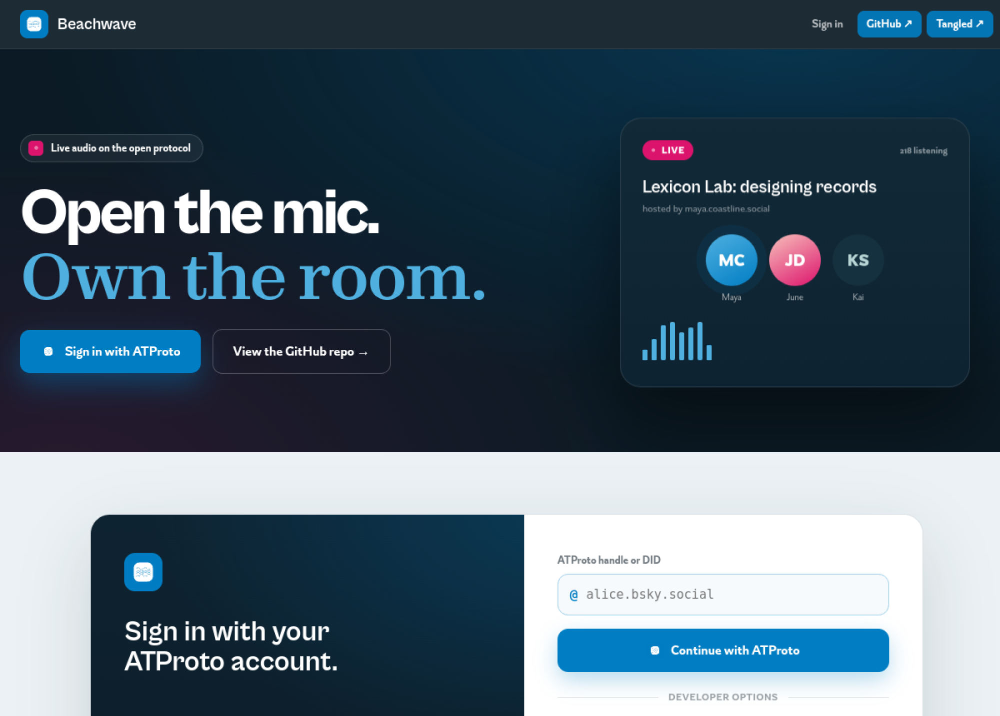

Beachwave
A deployable reference for live audio rooms on ATProto.

I got the idea for Beachwave because I wanted a simple way to spin up live audio conversations connected to a Bluesky identity, much like was popular during the pandemic. Unlike a hosted tool, I just wanted something that people could deploy on their own, connected to ATProto records.
The loop the demo proves
- Sign in with ATProto OAuth
- Create a room
- Publish room metadata
- Connect audio through LiveKit
- Share the room
- End the session
The repo is the artifact
The repo contains the artifact. It packages the lexicon, SDK, OAuth flow, media boundary, browser client, and deployment pattern so other people can adapt it and run their own version.
Part of a larger body of work
Beachwave is one of several protocol-native experiments built on the AT Protocol, where identity is portable and the data is yours. It sits alongside PBJ, Leafroll, Glowrm, and other ATProto work.